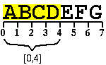

PHP version: 5
Required modules:
standard, spl, simplexml, dom, pcre
Required packages: none
class it\icosaedro\utils\Strings
Utility functions to handle strings intended as arrays of bytes
Version: $Date: 2012/03/17 17:19:00 $
Author: Umberto Salsi <salsi@icosaedro.it>
{
static string toLiteral(
string $s)Returns a PHP-compliant, pure ASCII, literal string in double-quotes
Useful to display arbitrary strings that may contain control characters or invalid encoding. All the ASCII control characters and the
$ \ "characters are converted to the form \xxx, where xxx is the octal code of the byte, with the exception of the usual control characters as LF, CR etc. that are rendered as escape sequences "\n", "\r" etc. Examples:
toLiteral(NULL) ==> "NULL"
toLiteral("abc\n") ==> "\"abc\\n\""static int compare(
string $a,
string $b)Compares two strings
Then $a<$b becomes Strings::compare($a, $b) < 0. The NULL value is allowed and it is "less" than any other string, and the empty string is less than any other string with al least a character: NULL < "" < "abc".
Return: Less that 0 if $a<$b, greather than zero if $a>$b, zero if the two strings are equal. Note that NULL is equal to itself, instead NULL and the empty string differ.
static string substring(
string $s,
int $start,
int $end)Return a subrange of a string
The NULL string has no subranges. The valid range of the indexes is:
0 <= $start <= $end <= strlen($s)Example:
substring("ABCDEFG", 0, 4) ==> "ABCD"Parameters:
$startIndex of the first char to consider. $endIndex of the char past the last char to consider. Return: The substring, whose length is exactly ($end-$start) bytes. Note that if $start==$end, then the empty string is returned.
Throws:
- unchecked
OutOfBoundsExceptionIf $s is NULL or the range is invalid.static boolean startsWith(
string $s,
string $head)Returns TRUE if $s starts with $head
Edge cases: 1) The NULL string starts only with a NULL string. 2) The empty string starts with either NULL and empty string. 3) A NULL $head returns TRUE for any $s string.
static boolean endsWith(
string $s,
string $tail)Returns TRUE if $s ends with $head
Edge cases: 1) The NULL string ends only with a NULL string. 2) The empty string ends with either NULL and empty string. 3) NULL is the tail of any string.
static int indexOf(
string $s,
string $target,
int $from = 0)Returns the starting position of the first occurrence of the target string in the given subject string
Parameters:
$sThe subject string. $targetTarget substring to search. The empty string can always be found at the very beginning of the search, so $from is returned. $fromSearch target in the range [$from,strlen($s)] of the subject string. Return: Index of the beginning first matching target, or -1 if not found.
Throws:
- unchecked
OutOfRangeExceptionIf $from outside [0,strlen($s)].static int lastIndexOf(
string $s,
string $target,
int $from)Returns the starting position of the last occurrence of the target string in the given subject string
Parameters:
$sSubject string. $targetTarget substring to search. The NULL and the empty string can always be found at the beginning of the search, so the length of $s string is returned. $fromSearch target in the range [0,$from] of $s. Return: Index of the beginning of the first matching target, or -1 if not found.
Throws:
- unchecked
OutOfRangeExceptionIf $from outside [0,strlen($s)].static string replace(
string $s,
string $target,
string $replacement)Replaces any occurrence of the target string with the replacement string
Search and replacement is performed scanning the subject string from left to right.
Parameters:
$sThe subject string. $targetAny occurrence of this string is replaced. $replacementReplacement string. Return: This string but with any occurrence of the target string replaced.
Throws:
- unchecked
InvalidArgumentExceptionIf the target is the empty string.static string codepointToUTF8(
int $codepoint,
string $invalid = NULL)Returns the UTF-8 character of the given codepoint
Only the Unicode BMP subset is supported, see www.unicode.org and RFC 3629 for more details.
Parameters:
$codepointThe allowed range of Unicode codes is 0x0000-0xD7FF, 0xE000-0xFFFF, so a sequence up to 3 bytes is generated. $invalidValue returned if an invalid codepoint is given. Return: The UTF-8 sequences of bytes that represents the codepoint.
static string UTF8Filter(
string $s)Returns a proper UTF-8 BMP string
Invalid UTF-8 BMP sequences and bytes are dropped, so the resulting string contains only characters from the BMP encoded as per the RFC 3629 par. 4. Only the Unicode BMP subset is supported, see www.unicode.org and RFC 3629 for more details.
Parameters:
$sAn arbitrary string, possibly with invalid UTF-8 sequences and invalid BMP codepoints. If NULL is passed, then NULL is returned. Return: Cleaned string in strict UTF8/BMP encoding, with invalid sequences and invalid BMP codepoints removed.
}
Generated by PHPLint Documentator